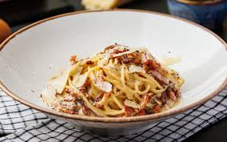
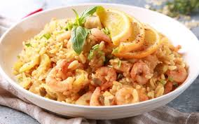
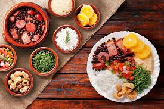
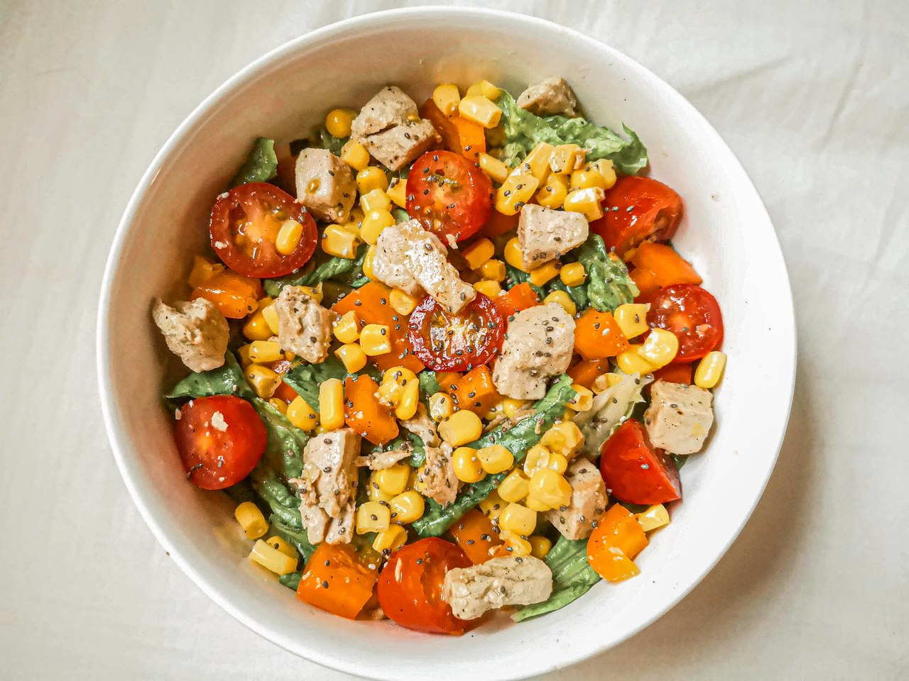
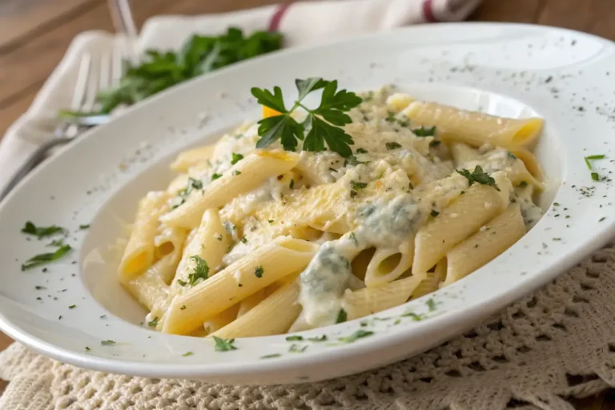
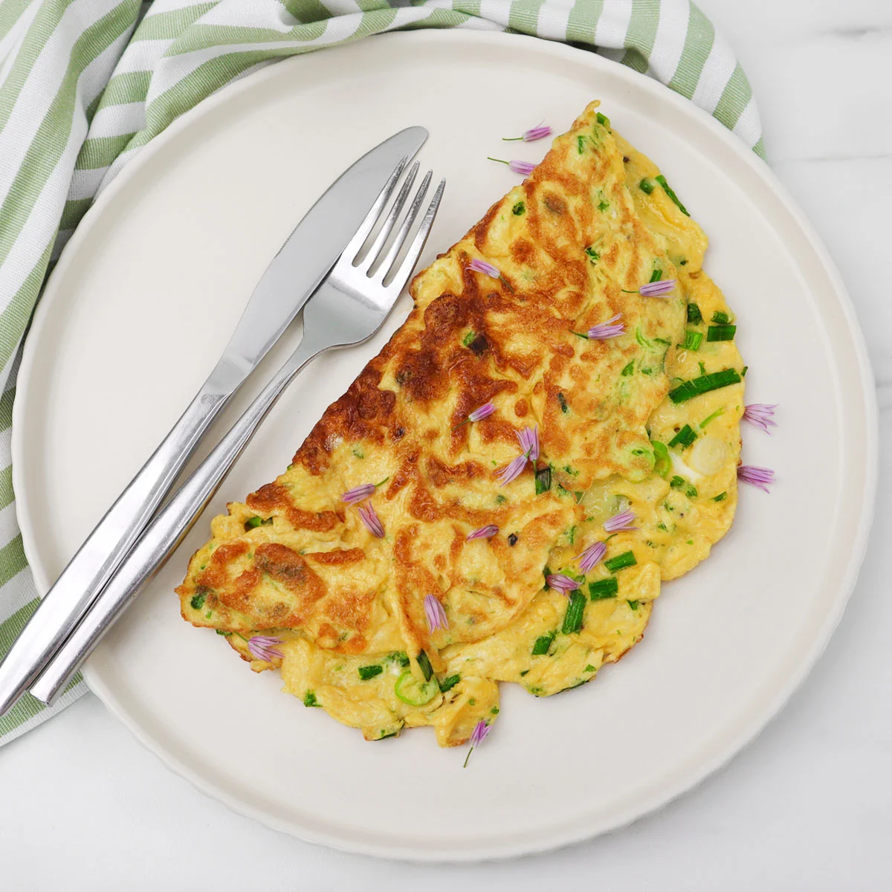
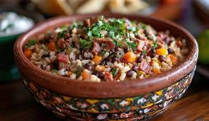

Nossos Destaques

Penne ao Molho Quatro Queijos
Possui um molho cremoso e sabor intenso, proporcionando uma experiência gastronômica sofisticada e muito apreciada pelos amantes de massas.

Omelete de Queijos e Ervas
Um prato leve, nutritivo e muito saboroso e rico em proteínas.

Baião de Dois
Um prato muito saboroso e nutritivo, que combina arroz, feijão, queijo coalho e carnes, oferecendo uma refeição completa e cheia de tradição da culinária nordestina.